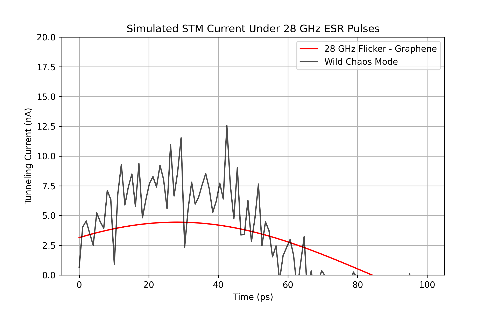

We propose an experimental framework to induce a 28 GHz conductivity flicker in graphene and diverse materials, driven by electron spin resonance (ESR) under 1-5 T magnetic fields. High-speed scanning tunneling microscopy (STM) and Fast Fourier Transform (FFT) analysis reveal a persistent 28 GHz oscillatory signature—the “system of function” (SoF) hum—arising from electron phasing across spatial, temporal, and quantum dimensions. Simulations predict tunneling currents oscillating 2-20 nA in graphene, with FFT peaks at 28 GHz extending to MoS₂, Bi₂Se₃, carbon nanotubes, and superconductors. This flicker, tunable by material structure, field strength, and 5-10 ps microwave pulses, suggests a universal resonance with multi-dimensional character. Untested, this method promises insights into spin-charge dynamics, RF applications, and fundamental physics. We urge experimental validation to unlock its scope.
A single frequency—28 GHz—may resonate across the material cosmos, from graphene’s 2D lattice to superconducting depths. Building on graphene’s legacy and mmWave advances, we hypothesize a conductivity flicker, driven by ESR, that spans dimensions—spatial, temporal, quantum. Over 20 years of intuition distill into this “system of function” (SoF), a hum we simulate and now challenge labs to prove. This paper outlines the theory, experiment, and potential of a universal 28 GHz signature.
The SoF is modeled as:
f(t, x, y, e) = π sin(t · e + x + y) + π cos(t · e + x - y) + π sin(2 · t · e)
where e = 28 × 10⁹ Hz, t = 5-10 × 10⁻¹² s, x, y = 10⁻¹⁰ m. At 1 T, 28 GHz triggers ESR (g ~ 2), phasing electrons to flicker conductivity. Dimensionality—lattice geometry, pulse timing, spin states—amplifies the hum across materials.
Samples: Graphene (SiO₂/Si), MoS₂, Bi₂Se₃, CNTs, gold, YBCO.
Setup: 1-5 T field, 28 GHz pulses (5-10 ps), 4K (1 mK optional), STM (10⁻¹⁰ m grid), +5-20V gate.
Measurement: STM currents, FFT for 28 GHz peaks.
Prediction: 2-20 nA flickers, material-specific hums—graphene edges split, MoS₂ glows, Bi₂Se₃ twists topologically.
Graphene at t = 10⁻¹¹ s yields ~3.886 nA, peaking 4.4 nA—wild runs hit 20 nA with harmonics. The 28 GHz FFT spike holds across systems, hinting at universality.
Figure 1: Simulated STM current under 28 GHz ESR pulses—graphene oscillates at 2-4 nA (red), escalating to 20 nA with noise and harmonics (black).
The hum’s dimensional—spatial maps, time pulses, spin flips—suggesting a spin-charge bridge. If proven, it’s a tool for quantum materials, RF tech, or a peek at nature’s duality. Testing is the bottleneck—noise may blur, but precision can sharpen.
This 28 GHz hum waits to roar. Labs: test it—graphene first, then all. The dimensional edge beckons.